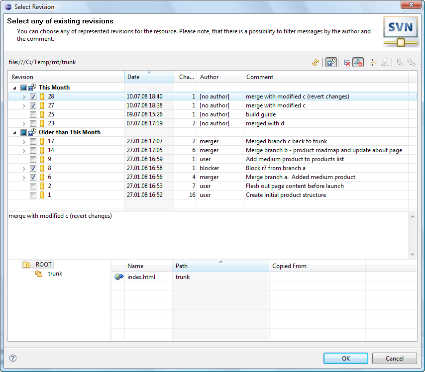

|
|
|
This dialog appears when the user clicks on 'Team>Merge...' menu item in the pop-up menu of the resource linked with the repository location, 'Merge...' menu item of the 'SVN main menu group' or on the 'Merge...' button on the 'SVN Toolbar'.
Merge modes:
There're three merge modes in total. Two of them accept a single path or URL to pick changes from and one is used to extract changes between a two different paths or URLs. In any of the three modes the target to apply the changes is the working copy in which you're performing the merge. So, let's see how do you actually use them.
Single path/URL merge:
It is typically used in order to merge all the eligible changes into the branch from its immediate ancestor. You can choose to merge all the eligible changes at once, which is called a 'sync' merge in terminology or merge explicitly defined set of changes using revision selection controls, which is called a 'cherrypick' merge.
In order to cherrypick an exact set of changes you can specify it manually by using revision ranges and/or enumerations, for example: 11-22, 25, 38. Or you can use alternatively the 'Revision Selection' dialog depicted below. There you just check the changes you need and the dialog will build a change set specification automatically.
Also please note, that when you select revisions in the 'Revision Selection' dialog - it's intuitive and understandable that all the changes represented by the selected revisions will be merged into the target, but when you enter revision ranges manually you should take into account that revision range defines a difference between the two specified revisions. What is a difference between revisions means exactly? That is simple, lets say, for example, you need to merge all the changes happened after the revision 5000 and up to the revision 5005. In that case you should specify revision range 5000-5005. It means that only changes from 5 revisions (5001, 5002, 5003, 5004 and 5005) will be merged into your code: just like in math when you subtracting two numbers. When you need changes not between a two revisions, but changes starting from a revision and up to a revision, you should decrease a start revision number of the revision range by 1, i.e. if you need all the changes from the revisions 5000-5005, you should specify revision range like this: 4999-5005 and that will include revision 5000 too. 'Revision Selection' dialog automatically decrements lowest selected revision number by 1 in order to make revision selection process be intuitively understandable.
If you need to reverse the merge, for example in order to amend the previously done one, then just select the 'Reversed merge' option.
| Option | Description | Default |
| URL | Specifies the remote resource location | 'blank' |
| Revisions | Specifies revision range to be used in merge. | Start from copy |
| Reverse | Specifies if the reverse merge should be performed. | Disabled |
| Ignore Ancestry | Specifies if Subversion® should ignore the ancestry of resources while merging. | Disabled |
| Depth | Specifies the depth to be covered by merge. | Working copy |
Reintegrate merge:
Reintegrate merge is used to bring changes from a feature branch back into the feature branch's immediate ancestor branch. It allows you to skip the changes that are ones and the same for the branch you are merging into and the branch you are merging from. The dialog for this mode is depicted below:
The requirements for reintegrate merge are as such: your working copy cannot have any local edits or contain a mixture of revisions. While these are typically best practices for merging anyway, they are strictly required in reintegrate mode. Once a reintegrate merge is done from branch to trunk, the branch is no longer usable for further work. It's not able to correctly absorb new trunk changes, nor can it be properly reintegrated to trunk again. For this reason, if you want to keep working on your feature branch, it is recommended to destroy it and then re-create it from the trunk.
| Option | Description | Default |
| URL | Specifies the remote resource location | 'blank' |
| Revision | Specifies revision to merge to. | Head Revision |
Two paths/URLs merge:
In this mode the difference between two source URLs with revisions specified are extracted and then applied to the target which is your working copy. The screen shot of the dialog in '2 URL' mode is shown below:
As SVN book states, most merges involve comparing trees that are ancestrally related to one another; therefore, svn merge defaults to this behavior. Occasionally, however, you may want the merge command to compare two unrelated trees. For example, you may have imported two source-code trees representing different vendor releases of a software project. If you ask svn merge to compare the two trees, you'd see the entire first tree being deleted, followed by an add of the entire second tree! In these situations, you'll want svn merge to do a path-based comparison only, ignoring any relations between files and directories. And the 'Ignore ancestry' option allows you to force SVN behave just like svn diff.
| Option | Description | Default |
| URL1 | Specifies the first remote resource location | 'blank' |
| URL2 | Specifies the second remote resource location | 'blank' |
| Start revision | Specifies the minimum merge range revision number. | Head |
| Stop revision | Specifies the maximum merge range revision number. | Head |
| Ignore Ancestry | Specifies if Subversion® should ignore the ancestry of resources while merging. | Disabled |
| Depth | Specifies the depth to be covered by merge. | Working copy |
Preview:
With the 'Preview' button the user can inspect the consequences of the merge operation without applying actual changes to the working copy.